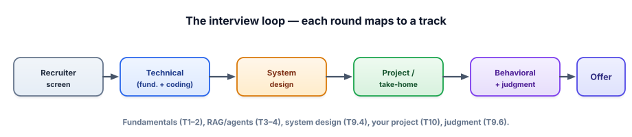

Mock interview drill
Knowing an answer and saying it well under pressure are different skills.
A mock interview is a rehearsal you run on yourself.
Set a 45-minute timer, answer out loud with no notes, and record it.
Then score every answer from 1 to 3 on four things: correctness, structure, trade-offs and delivery.
Anything below a 3 becomes next week's study list.
A mock interview is like a fire drill. You don't learn the way out by reading the map on the wall. You walk it, with the alarm on and a timer running, and afterwards you note exactly where people got stuck.
| In the picture | In the real system |
|---|---|
| The alarm and the timer | A 45-minute timer, out loud, no notes |
| Walking the route | Three blocks of about 15 minutes: technical, system design, behavioral |
| The observer with a clipboard | Your recording, scored 1–3 on four axes |
| Fixing the door that jammed | Every score below 3 goes on next week's study list |
Where the picture breaks. A fire drill uses the same route every time. Interviews don't, so you draw questions at random and practise starting to answer within five seconds.
Going deeper
Knowing the material and performing it under pressure are different skills. This lesson is a rehearsal: how to run a realistic mock on yourself, a mixed question drill, and a way to score your answers so practice actually improves them.
Why rehearse out loud
You can recognize a correct answer on a quiz and still freeze when a stranger asks the same thing live. Interviews test retrieval under pressure and communication, not just knowledge — and those only improve by simulating the real thing. Saying an answer aloud, against a clock, with no notes, surfaces the gap between “I get it” and “I can explain it well right now.” Better to find that gap in your living room than in the actual interview.

How to run a realistic mock
Set a 45-minute timer and treat it like the real thing: answer out loud, in full sentences, with no peeking at notes. Record yourself (phone audio is fine) — watching it back is uncomfortable and unreasonably effective; you’ll catch filler words, rushed reasoning, and answers that trailed off. Split the time into three blocks: ~15 minutes of fundamentals/RAG/agents Q&A, ~15 minutes on one system-design prompt (talk through it as if at a whiteboard), and ~15 minutes of behavioral questions. Then score yourself with the rubric below before reviewing answers.
The drill: draw a question
Use this to simulate the randomness of a real round. Draw a question, start talking within five seconds (no stalling), and give a complete ~2-minute answer. Draw again. Don’t look anything up mid-answer.
A few questions, with what a strong answer hits
Study these after you’ve attempted them cold. The point isn’t a script to memorize — it’s the checklist a good answer covers. (Track 15 has the full bank; these are a representative sampler.)
▸ “Walk me through how RAG works, and where it goes wrong.”
A strong answer hits: the pipeline (chunk → embed → store → retrieve → ground the answer with citations); why it exists (fresh/private knowledge without retraining, less hallucination); and the failure modes — retrieval misses the right chunk (fix: hybrid search, reranking, better chunking), the model ignores the context or hallucinates anyway (fix: grounding prompt, citations, faithfulness eval), and stale or duplicated docs. Bonus: mention you’d measure it (recall@k, faithfulness). Naming failure modes is what separates a senior answer from a textbook one.
▸ “When would you fine-tune instead of using RAG?”
Hits: default to prompt → RAG → fine-tune in that order. Fine-tune for form/behavior (tone, format, a narrow skill), not for fresh facts (that’s RAG’s job). Call out the costs: data preparation, compute, evaluation, and that it can’t easily incorporate changing knowledge. Mention LoRA/QLoRA make it cheaper. The trap is suggesting fine-tuning to “add knowledge” — flag that as usually the wrong tool.
▸ “Design a customer-support assistant over our help docs.” (system design)
Hits: clarify requirements first (volume, latency, languages, accuracy bar, what “done” means). Sketch the pipeline: ingestion + chunking, embedding + vector store, hybrid retrieval + rerank, grounded generation with citations, guardrails (PII, injection, refusal for out-of-scope), and an eval + monitoring loop. Then talk trade-offs: cost vs latency, model size, caching, fallback to a human. Close with how you’d measure success and catch regressions. Structure and trade-offs matter more than any single “right” design.
▸ “Tell me about a time you shipped something under ambiguity.” (behavioral)
Hits: use STAR — Situation, Task, Action, Result — in about two minutes, with a real metric in the Result. For a data engineer, a pipeline or reliability story works great; tie the lesson to how you’d operate on an AI team. Prepare 4–5 of these in advance (a conflict, a failure you owned, a hard trade-off, a shipped win, a time you influenced without authority). Specifics and outcomes beat generalities every time.
Score yourself honestly
After each answer, rate it 1–3 on four axes. Anything below a 3 is your study list for next time.
| Axis | 1 (work on it) | 3 (interview-ready) |
|---|---|---|
| Correctness | Missing or wrong key ideas. | Accurate; covers the core checklist. |
| Structure | Rambling; no clear order. | Clear path: why → how → trade-offs. |
| Trade-offs | One “right” answer, no nuance. | Names alternatives, costs, failure modes. |
| Delivery | Hesitant, filler, trails off. | Confident, concise, finishes cleanly. |
- Interviews test retrieval under pressure + communication — rehearse out loud, timed, recorded.
- Each round maps to a track (fundamentals→T1–2, RAG/agents→T3–4, design→T15.4, project→T14, behavioral→T15.6).
- Strong technical answers follow why → how → trade-offs & failure modes, and mention measurement.
- Prepare 4–5 STAR stories with real metrics; your data-engineering history is rich material.
- Score yourself on correctness, structure, trade-offs, delivery — anything under a 3 is next week’s study list.
Run one complete 45-minute mock today: 15 minutes drawing technical questions above (and from Track 15), 15 minutes on the support-assistant system-design prompt, 15 minutes on behavioral questions using your STAR stories. Record it, score every answer with the rubric, and write down your three weakest spots.
▸ How to get the most from the replay
When you watch it back, judge three things beyond correctness. Did you start within five seconds? Long stalls read as uncertainty; practice beginning with a one-sentence frame (“Sure — at a high level, RAG has three stages…”) to buy thinking time while sounding decisive. Did you finish, or trail off? End with a clean closer (“…and I’d measure it with recall@k and faithfulness”) instead of fading out. Did you name trade-offs unprompted? That’s the single most senior-sounding habit, and the easiest to add deliberately.
Why self-scoring works: the rubric turns a vague feeling (“that went okay?”) into specific, fixable targets. You’ll find your weak axis is usually the same one across answers — often structure or trade-offs, rarely raw correctness — which means a small, focused change lifts every future answer at once. Three honest mocks will do more for your performance than re-reading three more tracks.
Mid-interview, you’re asked something you genuinely don’t know. What’s the best move?
What's the strongest overall interview posture?
If you improve one thing, make it structure. Under pressure, knowledge you genuinely have can come out as a jumble, and a jumbled correct answer scores worse than a well-organized partial one — because the interviewer is also imagining you explaining things to teammates and stakeholders. A reliable template fixes most of this: open with a one-sentence frame, give the “why,” walk the “how” in order, then volunteer trade-offs and how you’d measure success. That shape works for nearly any technical question and it makes you sound senior even on topics you know only moderately well.
The same applies to system-design rounds, where there’s rarely a single right answer and the evaluation is almost entirely about process. Always start by clarifying requirements and constraints before drawing anything — jumping to a solution is the classic mistake — then sketch the components, then spend most of your time on trade-offs and failure modes, because that’s where senior judgment shows. Practicing this structure a few times is what lets your real knowledge land cleanly when it counts. You’ve done the learning; this is just making sure it survives contact with a nervous moment.
That’s the whole arc: you understand the engine, you can feed it knowledge and let it act, you can make it trustworthy, fast, and cheap, you’ve built proof, and now you can perform. If you want to go past job-ready into genuinely deep, Track 11: Going Deeper awaits — otherwise, go build, go apply, and good luck. You’ve earned the shot.
In one line: Rehearse out loud against a clock, score yourself honestly, and study whatever scored below a 3.